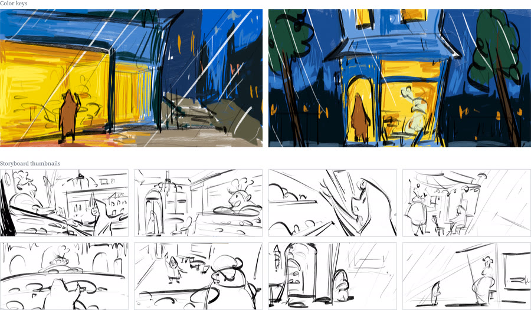
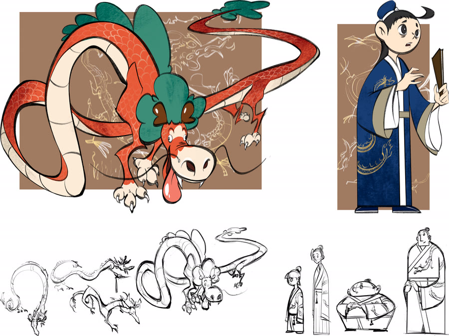
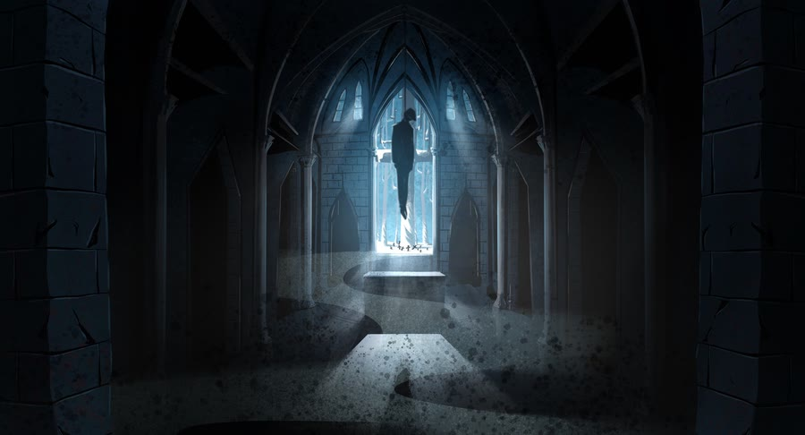
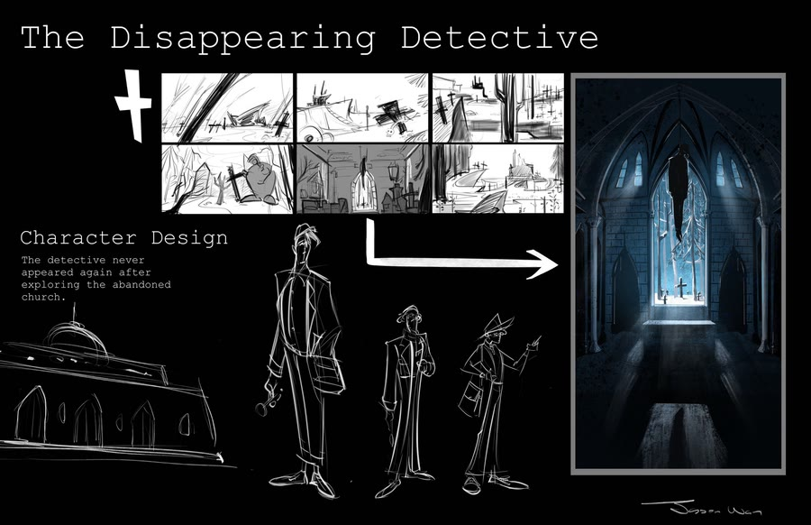

Three color keys
- What
- Class projects for Concept 2 at ArtCenter
- Year
- Spring 2025
Three short stories, each taken from thumbnails to a final color key.
Rainy Bakery
On rainy nights, the aroma of the bakery attracted a lovely guest.



Lord Ye's Passion for Dragons叶公好龙
To pretend to be fond of something while actually fearing it.



The Disappearing Detective
The detective never appeared again after exploring the abandoned church.




Next project: Hansel & Gretel